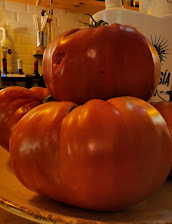
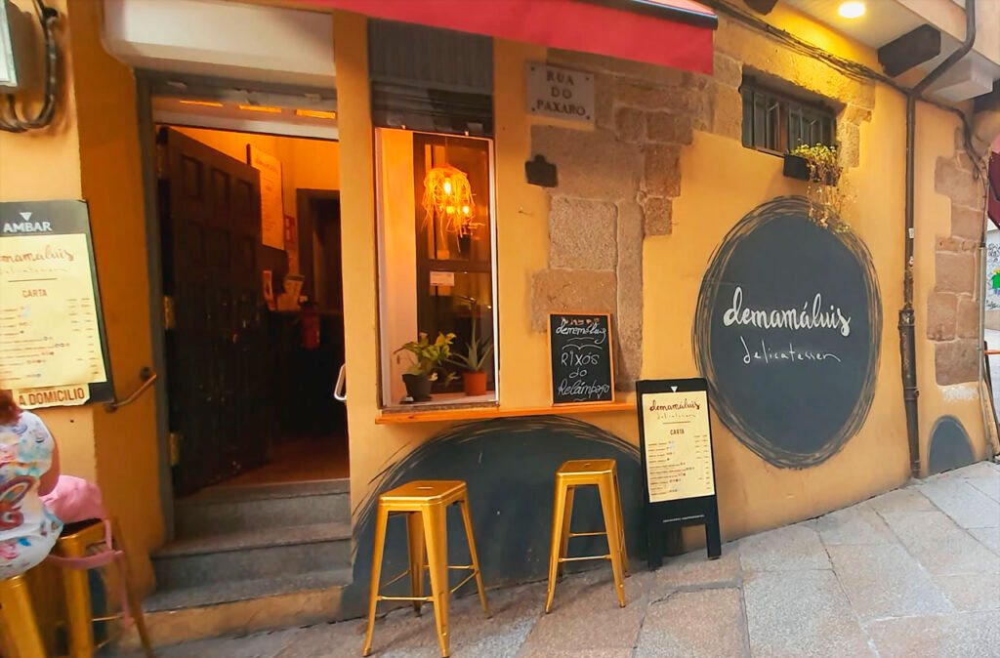
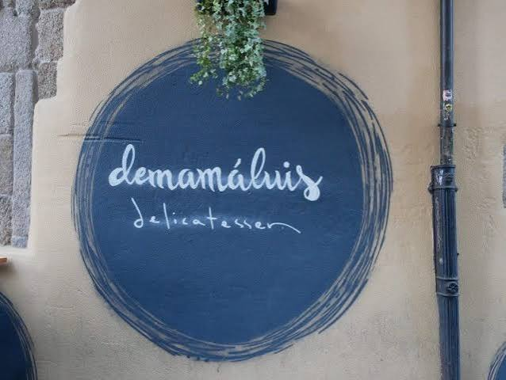
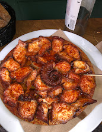
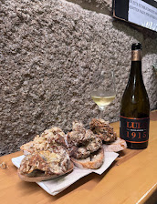
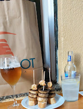
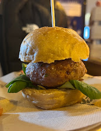
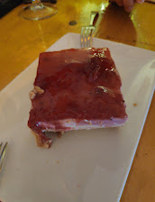
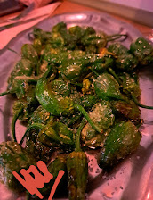

Tomate casero
De la huerta a la barra
Nuestro tomate no necesita nada más que aceite y sal. Sale de la huerta propia, no de una caja.

Casco Antiguo de Ourense
Delicatessen · Tapas & Vinoteca
Dos barras, una familia y el ruido bueno de las noches de vino en la Rúa do Paxaro. Se entra sin prisa y se sale con ganas de volver.
Quiénes somos
Esto lo llevamos nosotros dos, con nuestros nombres puestos en la puerta y en media carta. Una barra es de mamá Luis y la otra de papá Luis, y entre las dos se cocina lo mismo: comida de casa, hecha con tiempo.
No tenemos prisa y no queremos tenerla. Nos gusta preguntar qué tal va el día, recomendar el vino que abrimos hoy y que el tomate lo traigamos de nuestra huerta, no de una caja.
Ah, y no preguntéis quién paga — hay un cartel en la barra que ya lo explica.

Los de siempre

De la huerta a la barra
Nuestro tomate no necesita nada más que aceite y sal. Sale de la huerta propia, no de una caja.

El de toda la vida
Pimentón, aceite y el punto de siempre. No hace falta reinventarlo, hace falta hacerlo bien.

Crujientes, sin pedir perdón
Un clásico de la casa que no se anda con rodeos.

La receta que lleva su nombre
El plato que aparece en las dos cartas, porque en esta casa las recetas también se comparten.

Lleva nuestro nombre
Así que ya te imaginas el cuidado que le ponemos.

El lujo discreto de la barra
Para los días que piden un poco más que una tapa rápida.

Unos pican y otros no
El dicho de siempre, tal cual. Nadie sabe cuál te va a tocar.
Pan de Cea, tomate de huerta propia y el vino que toque ese día — así se cocina aquí.
La carta
Alérgenos orientativos según ingredientes habituales — confirma siempre en barra.
Lo que dicen
0
reseñas en Google, con una media de 4,7 sobre 5
Aquí no ponemos frases nuestras en boca de nadie. Si quieres leer lo que escribe la gente, está todo en Google.
Reseñas reales, tal cual se escribieron en Google — pulsa una tarjeta para verla en Google
Producto de la tierra, servido sin prisa — esa es toda la receta.
Dónde estamos
Dirección
Rúa do Paxaro, 2
Rúa Viriato, 12
Casco Antiguo de Ourense
No cogemos reservas
La terraza y el aforo van por orden de llegada. Si está lleno, espera un poco: casi siempre se libera algo y mientras tanto te ponemos una copa.
Horario
El horario cambia según la temporada y los festivos, así que lo vamos contando en Instagram. Ahí está siempre lo último.
Ver horario en @demamaluisEl día a día
Lo que entra hoy, el vino que abrimos y el cierre de agosto: todo lo contamos ahí.
@demamaluis en Instagram